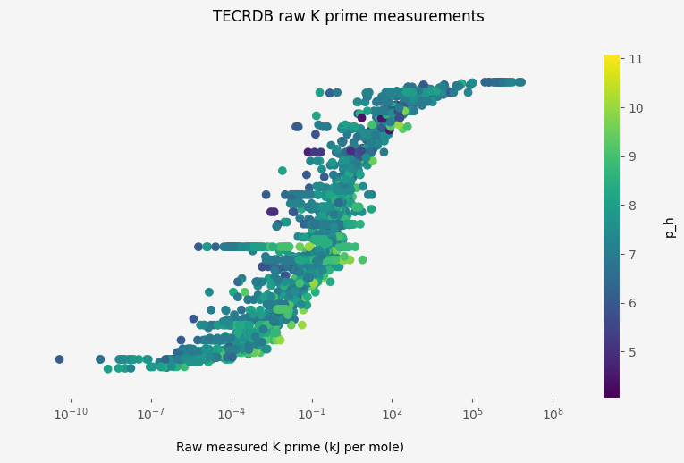
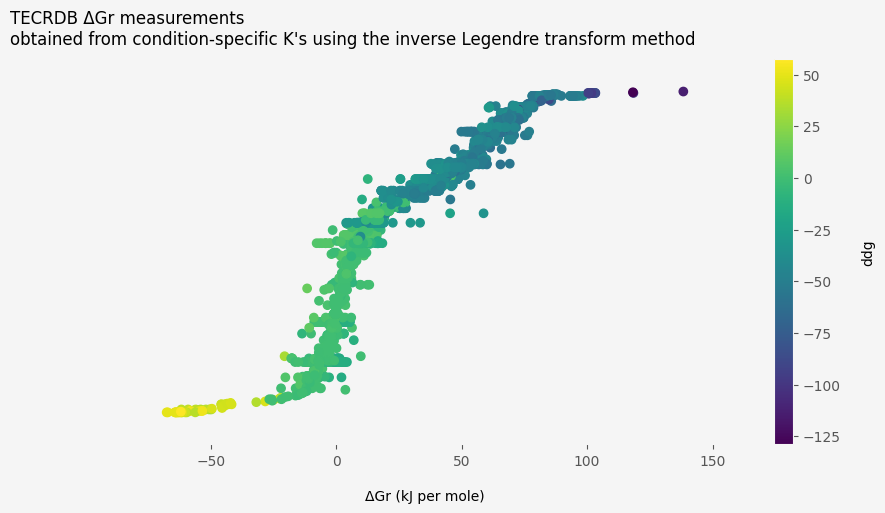

A few months ago I decided to learn more about the formation energy numbers that appear on the website eQuilibrator. I ended up learning a whole lot and thought I'd write it down here.
If you're coming to this topic for the first time, you may also want to check out eQuilibrator's documentation or Noor et al. (2013), which are both very informative and readable guides to the scientific background. I've aimed to add some more detail to give an idea of where eQuilibrator's training data comes from and how it is transformed to take into account experimental conditions.
The formation energy of a compound is the amount of energy that is stored or released by the chemical reaction that creates it out of its constituent elements. For example, according to Wikipedia, liquid water has a formation energy of -237.14 kilojoules per mole. This means that creating 1 mole of liquid water out of gaseous hydrogen and oxygen stores 237.14 kilojoules of energy from the surrounding environment.
I'm interested in formation energies because I want to model the rates of metabolic reactions, which depend (among other things) on the thermodynamic properties of the metabolites that they produce and consume. For example, the compound ATP has a very low formation energy. Metabolism takes advantage of this by using ATP to store energy and to drive reactions that would otherwise be thermodynamically infeasible. Knowing the exact formation energy of a metabolite can help us to find out if a genetic intervention like knocking out a reaction or over-expressing an enzyme would help or hinder an organism's metabolism.
Unfortunately it's not always straightforward to measure a compound's formation energy. Metabolic networks involve lots of compounds, and not all of them have been measured accurately. As a result, there is a lot to be gained by taking advantage of scientific knowledge and statistical machinery, so as to make the best possible use of the available information. Over the last decade or so, as metabolic modelling has become more feasible and popular, there has been a corresponding effort to estimate formation energies more accurately, and to increase the number of compounds whose formation energy can be estimated.
In this short story I'll try to explain how this kind of modelling works, using worked examples. I lean heavily on the 'component contribution' method from Noor et al. (2013), which underpins the website equilibrator and has a great collection of related python libraries.
My original code can be found here - to run it yourself you'll need a python 3 environment with the following packages installed:
The maintainers of the equilibrator libraries have very helpfully aggregated enough machine-readable measurements, auxiliary information and analysis code for our purposes.
I wrote a short python script to fetch some of this data and store it as csv files. Here it is:
import pandas as pd
from equilibrator_cache import create_compound_cache_from_quilt
import component_contribution
import quilt
QUILT_PACKAGE_VERSION = '0.2.9'
def fetch_data(quilt_pkg):
ccache = create_compound_cache_from_quilt(version=QUILT_PACKAGE_VERSION)
con = ccache.engine
return {
'compounds': pd.read_sql_table('compounds', con=con),
'compound_identifiers': pd.read_sql_table('compound_identifiers', con=con),
'compound_microspecies': pd.read_sql_table('compound_microspecies', con=con),
'registries': pd.read_sql_table('registries', con=con),
'formation_measurements': quilt_pkg.train.formation_energies_transformed(),
'redox_measurements': quilt_pkg.train.redox(),
'tecrdb_measurements': quilt_pkg.train.TECRDB(),
}
if __name__ == "__main__":
try:
quilt_pkg = quilt.load('equilibrator/component_contribution')
except:
quilt.install(
package=component_contribution.DEFAULT_QUILT_PKG,
version=QUILT_PACKAGE_VERSION,
force=True
)
quilt_pkg = quilt.load('equilibrator/component_contribution')
dfs = fetch_data(quilt_pkg)
for df_name, df in dfs.items():
df.to_csv(f'data/{df_name}.csv')The files formation_measurements.csv, redox_measurements.csv and tecrdb_measurements.csv record the results of experiments that can be used to infer likely values of compounds' formation energies. The other files contain information about the compounds and their names.
The experiments in tecrdb_measurements.csv originally come from this website. The researchers who compiled it scanned lots of papers like this
and put them in machine-readable form like this
It is possible to download the results from the NIST website directly, but I preferred to use the equilibrator data as this saved some web scraping and also makes it easier to ensure direct comparability with other peoples' work.
The measurements in the TECRDB record a quantity called , which is the ratio, at given experimental conditions, of substrates to products when a reaction is at thermal equilibrium. This quantity is related to the standard gibbs free energy of the reaction, which in turn is related to the formation energies of the compounds involved in the reaction.
Here is a graph showing the distribution of the raw measurements for different reactions, arraged according to each reaction's mean measured value. Each measurement's colour represents the pH at which it was obtained.

Looking at the colours, it is clear that, for many reactions, the darker, bluer spots are on the left and the lighter, yellower spots are on the right. For these reactions, the measured values were higher when the experiment was done at a higher pH. This is what one would expect based on the underlying science, as many of the measured chemical reactions are sensitive to hydrogen ions.
Accounting for the effect of experimental conditions like pH is a key part of analysing this data.
In order to connect the reaction-specific measurements in the TECRDB with the compound-specific formation energies that we are interested in, the first step is to find the gibbs free energy change corresponding to each measurement.
This is straightforward, as the condition-specific gibbs free energy change at temperature is related to as follows:
where is a physical constant (the universal gas constant).
Applying this transformation produces the following standard gibbs free energy measurements:

There is clearly still a systematic dependence on pH for many reactions - I explore below how the component contribution attempts to take into account pH and other experimental conditions.
The next source of relevant data are direct measurements of compound formation energies, taken from Alberty (2003) and some other sources (see the column 'reference' in formation_measurements.csv for details). The measurements are of the are all recorded as having been taken at the same pH and temperature.
Here is a plot of these formation energy measurements:

The range of values shown here is much greater than that of the TECRDB values plotted above. This is because of a technical limitation that means most biochemical reactions can only be measured when their value is close to zero.
The table redox_measurements.csv records changes in reduction potential due to redox reactions, where a compound gains an electron. For example, Loach (2010) records NAD reduction, where the compound NAD(+) turns into NADH by gaining an electron, as changing the reduction potential by -0.32 Volts per mole.
The reduction potential change of a redox reaction is related to its condition-specific gibbs free energy change by the following equation:
where is the Faraday constant and is the number of electrons transferred by the reaction.
Here is a plot of the values of the measured redox reactions.

This section sets out how the component contribution method preprocesses the reaction measurements it takes in, so as to take into account the effect of the experimental conditions under which the measurements were obtained. Most of what follows comes from Alberty (2003), while the code examples are heavily inspired by the equilibrator packages.
The component contribution method takes experimental conditions into account by transforming the measured values to standard condition gibbs free energies of reaction, which are then used as inputs to a statistical model. To do this transformation, component contribution takes advantage of some scientific knowledge about the effects of temperature, ionic strength and the concentration of hydrogen and magnesium ions.
For each measurement, the component contribution method obtains a standard-condition gibbs free energy change corresponding to the measured condition-specific value using inverse Legendre transformations, as described in Alberty (2003).
The relationship between the two quantities is as follows:
The quantity in this equation is obtained by the following procedure:
Find the standard condition value for each microspecies in the reaction by inferring it from acid dissociation constants.
Find the condition-specific value for each microspecies in the reaction by adding the standard condition value to the legendre transform adjustment based on the conditions (pH, pMg, ionic strength and temperature) and the microspecies's number of protons, charge and number of magnesium atoms.
Find each compound's value by calculating the log-sum-exp of -1 times the condition-specific of each its component microspecies, then multiplying the result by -1.
Find the reaction's value by adding together the product of each compound's value and its stoichiometric coeffient.
Here are some python functions I made that implement this procedure with the help of the package equilibratorcache, which supplies the standard-condition for each microspecies and maps microspecies to compounds and compounds and stoichiometric coefficients to reactions:
"""Functions for doing Legendre transforms"""
import numpy as np
from equilibrator_cache.models import Compound, CompoundMicrospecies
from equilibrator_cache.reaction import Reaction
from scipy.special import logsumexp
R = 8.31e-3 # kJ / mol / K
standard_dg_formation_mg = -455.3 # kJ/mol (Mg2+ formation energy)
def dh(ionic_strength: float, temperature: float) -> float:
"""Debeye-Hueckel factor for finding an ionic strength/temperature effect."""
_a1 = 1.108
_a2 = 1.546e-3
_a3 = 5.959e-6
B = 1.6
if ionic_strength <= 0.0:
return 0.0
alpha = _a1 - _a2 * temperature + _a3 * temperature ** 2
return alpha * ionic_strength ** 0.5 / (1.0 + B * ionic_strength ** 0.5)
def legendre_transform(
p_h: float,
ionic_strength: float,
temperature: float,
p_mg: float,
num_protons: float,
charge: float,
num_magnesiums: float,
):
log10 = np.log(10)
RT = R * temperature
ph_part = num_protons * log10 * p_h
dh_part = (num_protons - charge ** 2) * dh(ionic_strength, temperature)
mg_part = 0 if num_magnesiums <= 0 else num_magnesiums * (
p_mg * log10 - standard_dg_formation_mg / RT
)
return ph_part + dh_part + mg_part
def get_ddg_over_rt_for_microspecies(
ms: CompoundMicrospecies,
p_h: float,
ionic_strength: float,
temperature: float,
p_mg: float
):
conditions = p_h, ionic_strength, temperature, p_mg
ms_facts = ms.number_protons, ms.charge, ms.number_magnesiums
return ms.ddg_over_rt + legendre_transform(*conditions, *ms_facts)
def get_ddg_over_rt_for_compound(
cpd: Compound,
p_h: float,
ionic_strength: float,
temperature: float,
p_mg: float
):
conditions = p_h, ionic_strength, temperature, p_mg
return -logsumexp([
-1 * get_ddg_over_rt_for_microspecies(ms, *conditions)
for ms in cpd.microspecies
])
def get_ddg_over_rt_for_reaction(
rxn: Reaction,
p_h: float,
ionic_strength: float,
temperature: float,
p_mg: float
):
conditions = p_h, ionic_strength, temperature, p_mg
return sum([
stoichiometric_coef * get_ddg_over_rt_for_compound(cpd, *conditions)
for cpd, stoichiometric_coef in rxn.items(protons=False)
])Here is the same graph as before, but now with transformed, standard condition gibbs free energy changes:

The colors show the value for each reaction, i.e. essentially the difference between the untransformed and transformed values. It is clear from the graph that the adjustments due to Legendre transforms are substantial.
Using inverse Legendre transforms to coerce the measurements to standard conditions before modelling is better than naively using the values - see the supplementary appendix S1 of Noor et al. (2013) for a comparison of these two alternatives. However, this method introduces several issues. First, any uncertainty as to the dissociation constants used to infer each microspecies's standard condition value is ignored. Second, the experimental conditions - particularly pMg and ionic strength - are not always recorded accurately and are sometimes missing altogether. In order to maintain reasonable coverage, the component contribution method imputes default values where pMg (default value 14) or ionic strength (default value 0.25M) is missing.
These issues could be addressed by accounting for them when modelling the transformed data, for example by using a model that can assume different (hopefully worse) accuracies for measurements where a default ionic strength or pMg value was assumed. Alternatively, the dependency of measurements on experimental conditions could be included in a model using forward Legendre transforms rather than being addressed in pre-processing.
Alberty, Robert A. 2003. Thermodynamics of Biochemical Reactions. Hoboken, N.J: Wiley-Interscience.
Loach, Paul A. 2010. “Oxidation-Reduction Potentials, Absorbance Bands and Molar Absorbance of Compounds Used in Biochemical Studies.” Handbook of Biochemistry and Molecular Biology, 4th Ed. CRC Press, Boca Raton, FL, 557–63.
Noor, Elad, Hulda S. Haraldsdóttir, Ron Milo, and Ronan M. T. Fleming. 2013. “Consistent Estimation of Gibbs Energy Using Component Contributions.” Edited by Daniel A. Beard. PLoS Computational Biology 9 (7): e1003098. https://doi.org/10.1371/journal.pcbi.1003098.